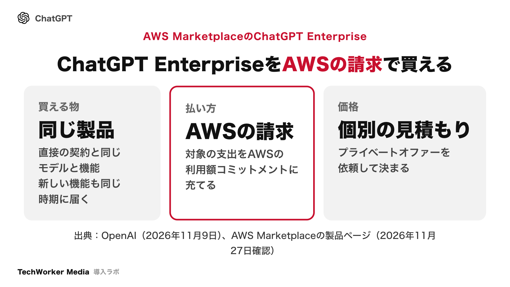
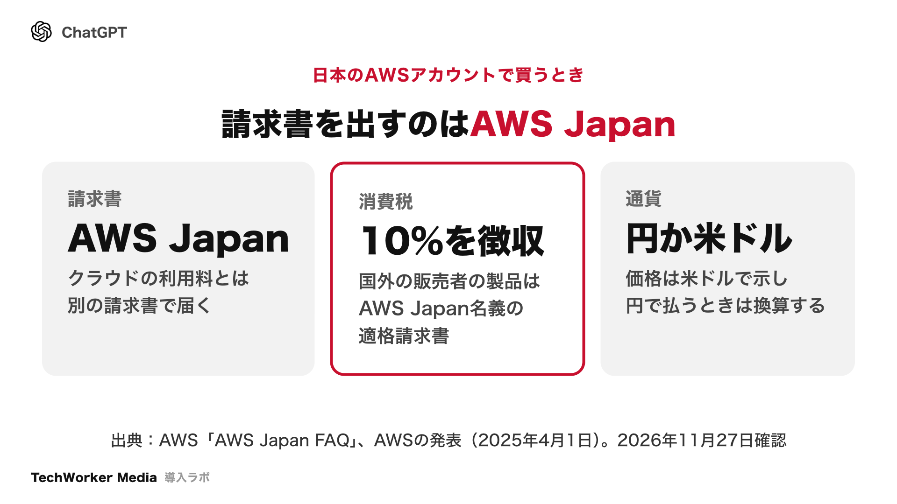
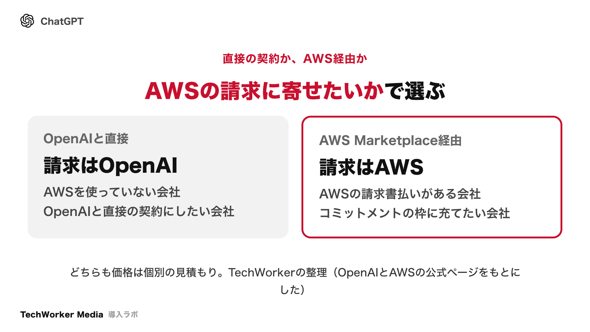
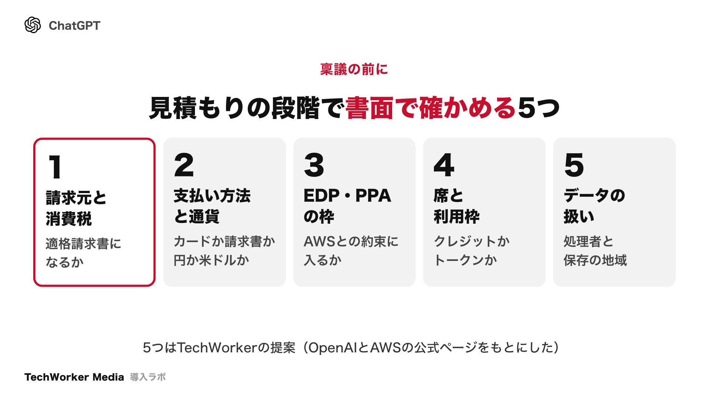

OpenAIは2026年11月9日、ChatGPT EnterpriseをAWS Marketplaceで買えるようにしました。AWSのアカウントで買い、AWSの請求書で払えます。
- 買える物：直接の契約と同じモデルと機能です。ChatGPT、ChatGPT Work、Codex、dotsが入ります。
- 価格：公開されていません。プライベートオファー（個別の見積もり）で決まります。
- 日本の請求：日本のAWSアカウントで買うと、AWS Japanが請求書を出します。AWSは10%の消費税を徴収すると発表していますが、AWSのFAQには食い違う記述も残っています。
OpenAIの発表、AWS Marketplaceの製品ページ、AWS JapanのFAQを2026年11月27日に読みました。稟議の前に情シスと購買の担当が確かめることをまとめます。
AWS Marketplaceで何が買えるようになりましたか？
ChatGPT Enterpriseです。直接の契約と同じモデルと機能が使え、新しい機能も同じ時期に届きます。対象の支出はAWSの利用額コミットメント（AWSと約束した利用額）に充てられます。

OpenAIの発表は次のように書いています。
原文“The listing gives organizations a simpler way to discover, buy, and manage ChatGPT Enterprise using their existing AWS purchasing and billing relationship and to apply eligible spend toward their AWS commitments.”
日本語訳この掲載で、組織は既存のAWSの購入と請求の仕組みを使って、ChatGPT Enterpriseをより簡単に見つけ、買い、管理できます。対象の支出はAWSのコミットメントに充てられます。
- 中身：ChatGPT、ChatGPT Work、Codex、dotsを1つにしたサービスです。Codexの席と利用枠はCodexの法人契約と料金にまとめています。
- 販売元：AWSの製品ページの表示はOpenAIです。提供の形はSaaS（ネットで使うソフト）です。
- ほかの製品：対象の組織はヘルスケア向けと金融サービス向けのChatGPTもAWS Marketplaceで使えます。
- 使える条件：OpenAIは条件をOpenAIかAWSの担当チームに問い合わせるよう案内しています。
料金はいくらですか？
公開されていません。AWSの製品ページの料金は「カスタム料金」です。価格は買う会社の要件と資格で決まるとされ、個別の見積もりはプライベートオファーで依頼します。
直接の契約とAWS経由を、公式のページに書かれていることで比べました。
| 項目 | OpenAIと直接 | AWS Marketplace経由 |
|---|---|---|
| 価格 | 公開なし（カスタム料金）。営業に問い合わせる | 公開なし（カスタム料金）。プライベートオファーを依頼する |
| 料金の体系 | クレジットベースかトークンベース | 製品ページに記載なし |
| 機能 | Enterpriseの機能 | 直接と同じモデルと機能 |
| 請求書を出す所 | OpenAI | 日本のAWSアカウントではAWS Japan |
| 支払い方法 | 請求書払いなどは営業に相談。年間プラン | AWS Japanのクラウドと同じ（カードか請求書払い） |
| AWSとの約束の枠 | 公式ページに記載なし | 対象の支出をEDP・PPAに充てられる（契約による） |
出典：OpenAI「Business プランと Enterprise プランの料金」、ChatGPT「料金」、AWS Marketplace「ChatGPT Enterprise」、AWS「AWS Japan FAQ」（2026年11月27日確認）
AWS経由の価格が直接の契約より高いか安いかは、どちらの公式のページにも書かれていません。同じ席の数と利用量で両方の見積もりを取り、書面で比べます。AWS JapanのFAQはMarketplaceの料金を米ドルで示すと書いていますが、この製品の見積もりの通貨は製品ページに書かれていません。消費税の扱いは、次の節のとおり確かめが要ります。価格が公開されていないため、円での目安は出せません。
直接の契約の料金の決まり方は、ChatGPTの法人契約と料金のEnterpriseの節にまとめています。
日本のAWSアカウントで買うと、請求はどうなりますか？
AWS Japanがクラウドの利用料とは別の請求書を出します。支払い方法はAWS Japanのクラウドと同じで、円で払うときは米ドルで計算してから円に換算されます。消費税と適格請求書は、AWSの発表とFAQの項で書き方が食い違うため、書面で確かめます。

| 項目 | AWS JapanのFAQの記述 |
|---|---|
| 請求書を出す所 | 他社が直接売るMarketplaceの製品はAWS Japan。Amazon Bedrockで売る他社の製品と、AWSの自社製品はAWS Inc. |
| 請求書の分け方 | クラウドの利用料とは別の請求書 |
| 支払い方法 | AWS Japanのクラウドと同じ。カードはVisa、Mastercard、American Express、JCB、Diners Club、銀聯 |
| 通貨 | American Express以外のカードは円だけ。American Expressと請求書払いは、アカウントの支払い通貨（円か米ドル）。設定を変えていなければ円 |
| 為替 | 料金は米ドルで示し、米ドルで計算してから円に換算する。クラウドの支払いの項は、為替は請求書の発行日で決まり、AWSは変更を前もって知らせられないと書く（Marketplaceも同じとは書かれていない） |
| カードの上限 | 一部のカードの処理会社は、999万9,999円を超える取引を処理できない |
| 振込先 | AWS Japanのクラウドの支払いと同じ銀行口座 |
出典：AWS「AWS Japan FAQ」のAWS Japan Marketplaceの購入者向けの項。為替の行の後半はクラウドの支払いの項（2026年11月27日確認）
消費税と適格請求書の扱いは、販売者が日本の外か中かで仕組みが分かれます。AWSは2025年4月1日に次のように発表しました。
原文「MPF ルールに基づき、AWS Marketplace は、日本に住所を持たない独立系ソフトウェアベンダー (ISV) およびチャネルパートナー (まとめて日本以外の販売者) が日本の顧客に販売した場合、日本の消費税 (JCT) を徴収し、税適格請求書 (TQI) を発行します。」
- 日本の外の販売者：発表とFAQのインボイスの項（11番）は、AWS Japanが10%の消費税を徴収し、適格請求書を出すと書いています。AWS Japanの登録番号はT6011001106696です。
- 日本の販売者：FAQの中で書き方が割れています。特定プラットフォーム事業者の項（23〜25番）は、AWS Japanが10%を徴収し、AWS Japanの名義で適格請求書を出すと書いています。インボイスの項（6・8・11番）は、AWS Marketplaceの請求書は適格請求書ではなく、適格請求書は販売者に求めるよう書いています。
さらに、FAQの購入者向けの項（14番）には、消費税は販売者が別に請求して徴収する、という記述も残っています。OpenAIの出品が日本の外と中のどちらに当たるかは、製品ページに書かれていません。見積もりの段階で、消費税を誰が徴収するかと、請求書が適格請求書になるかを、AWSの担当に書面で確かめます。
AWSのEDPやPPAの枠に充てられますか？
充てられます。ただし対象になる支出は契約によります。AWSの製品ページは、契約内容に応じて対象の利用額がEDPやPPAのコミットメントに数えられると書いています。
EDPやPPAは、AWSと利用額を約束する個別の契約です（製品ページに定義は無く、TechWorkerの説明です）。OpenAIの発表も「対象となる支出」を充てられると書いており、すべての支出が入るとは書いていません。
自社の契約で確かめるのは次の2つです。
- AWS Marketplaceでの購入が、約束の額のいくらまで数えられるか
- ChatGPT Enterpriseのプライベートオファーが、その対象に入るか
どちらも自社の契約書の条件で決まるため、AWSの担当に書面で確かめます。
直接の契約とAWS経由は、どちらを選びますか？
AWSの請求書払いの仕組みがあり、約束の枠に充てたいなら、AWS経由の見積もりも取ります。AWSを使っていない会社は、直接の契約で進めます。

AWSのバイスプレジデント（AWS Marketplace and Partner Services担当）は、発表の中で次のように話しています。
原文“With ChatGPT Enterprise in AWS Marketplace, customers can buy it through their AWS account, govern it alongside the rest of their software spend, and move from evaluation to rollout faster.”
日本語訳AWS MarketplaceのChatGPT Enterpriseなら、お客様はAWSのアカウントで買い、ほかのソフトウェアの支出と一緒に管理し、評価から導入までを早く進められます。
- AWS経由が合う会社：AWS Japanの請求書払いの仕組みがある会社、EDPやPPAの枠に余りがある会社、新しい取引先の登録を増やしたくない会社です。
- 直接が合う会社：AWSのアカウントを使っていない会社、OpenAIと直接の契約にしたい会社です。
AWSの製品ページの「類似製品」の欄には、AnthropicのClaude Enterpriseも出ています。4社の法人契約を料金とデータの扱いで比べるときは、生成AIの法人契約の比較を使えます。
データは誰が扱いますか？
データの処理者はOpenAIで、AWSはOpenAIの委託先（サブプロセッサー）の1つです。業務のデータは保存中も転送中も暗号化され、既定ではOpenAIのモデルの学習に使われません。
- 処理者：AWSの製品ページは、OpenAIがChatGPT Enterpriseのデータの処理者で、OpenAIのデータ処理の取り決め（DPA）と委託先の一覧のとおり、AWSを含む委託先を使うと書いています。
- 地域：保存の地域と、推論（AIが答えを作る処理）の地域を別に指定できます。有効にしたときだけ効き、すべての地域で使えるわけではありません。
- 管理：管理者は利用者のアクセス、権限、つないだツールを管理できます。
AWSで買っても、データの処理者はOpenAIです。AWS経由の契約でDPAの相手がどうなるかは製品ページに書かれていないため、見積もりの段階で確かめます。社内のセキュリティの審査では、OpenAIのDPAと委託先の一覧を見ます。
稟議の前に何を確かめますか？
中心は、請求元と消費税、支払い方法と通貨、約束の枠、席と利用枠、データの扱いの5つです。契約の期間と会話の移し方を足した7つを、見積もりの段階で書面にします。公式のページをもとにしたTechWorkerの提案です。

見積もりの段階で書面にしておく項目
□ 請求書を出すのはAWS Japanか。適格請求書になるか、登録番号は何か
□ 支払いはカードか請求書払いか。通貨は円か米ドルか。カードなら999万9,999円を超えないか
□ EDP・PPAの枠に入るか。入るなら、いくらまでか
□ 席の単価と含まれる利用枠、超えた分の払い方（クレジットかトークンか）
□ 契約の期間と更新、席を減らせる時期
□ データの処理者、保存と推論の地域、学習に使わない設定
□ 個人のPlusやProで使ってきた人の会話の移し方
情報の扱いやほかのAIとの比較など、直接の契約と共通の項目は、ChatGPTの法人契約と料金の稟議の節にまとめています。
よくある質問
AWS Marketplaceでの購入は、AWSのアカウントを通して行います。AWSを使っていない会社は、OpenAIとの直接の契約で検討します。
OpenAIの発表とAWSの製品ページに出ているのはEnterpriseです。対象の組織にはヘルスケア向けと金融サービス向けのChatGPTも案内されています。Businessについての記載はありません。
OpenAIは、直接の契約と同じモデルと機能が使え、新しい機能も同じ時期に届くと書いています。
OpenAIは、Bedrockを開発者がOpenAIのモデルでアプリやエージェントを作る用途、ChatGPT Enterpriseを社員が日々の業務で使う用途と説明しています。AWS JapanのFAQによると、Amazon Bedrockを通して売られる他社の製品はAWS Inc.が請求します。
AWSのアカウントの支払い通貨が円なら、円で払います。American Express以外のカードは円だけです。料金は米ドルで示され、米ドルで計算してから円に換算します。FAQのクラウドの支払いの項は、為替は請求書の発行日で決まり、AWSは変更を前もって知らせられないと書いています。
次の一歩は何から始めればよいですか？
OpenAIかAWSの担当にプライベートオファーを依頼し、同じ席の数と利用量で、直接の契約の見積もりも取ります。
見積もりがそろったら、上の7つの項目を書面の答えで埋めて稟議に載せます。席を配ったあとに社員が使い方で止まらないよう、研修の日程も同じ稟議に入れると、配った席が使われずに残るのを防げます。
ChatGPT・Claude・Gemini・Copilotの法人契約の比較表と、社内ルールの雛形は、下の枠から受け取れます。
出典と確認範囲
確認日：2026年11月27日。TechWorkerはAWS Marketplaceでの購入を試していません。AWS経由の価格、OpenAIの出品が日本の外の販売者として扱われるか、請求書が適格請求書になるかは、公式のページからは分かりません。AWS Marketplaceの製品ページの日本語の説明は一部が機械翻訳のため、英語の発表と照らして読みました。
- OpenAI「ChatGPT Enterprise now available in AWS Marketplace」（2026年11月9日、2026年11月27日確認）
- AWS Marketplace「ChatGPT Enterprise」（2026年11月27日確認）
- AWS「AWS Japan FAQ」（AWS Japan Marketplaceの購入者向けとインボイスの項、2026年11月27日確認）
- AWS「AWS Marketplace がジャパンマーケットプレイスファシリテータールールのサポートを開始」（2025年4月1日、2026年11月27日確認）
- OpenAI「Business プランと Enterprise プランの料金」（2026年11月27日確認）
- ChatGPT「料金」（日本からの表示、2026年11月27日確認）